Ren’s customers were a few large enterprise accounts. I rebuilt the marketing site, reworked how it explains Ren, and ran the go-to-market work around it. Free-trial signups surged afterward, which opened a second way in.
- Role
- Site rebuild, messaging, go-to-market
- Shipped
- 50+ pushes to production, myself
- Newsletter
- Co-run, 3,000+ subscribers
- Result
- Free-trial signups grew 60%
Ren needed a second way in
Almost every customer came through a sales-led rollout. For people to find Ren and try it on their own, the website had to explain it without anyone from Ren in the room.
Lead with what a manager gets, and show the real product
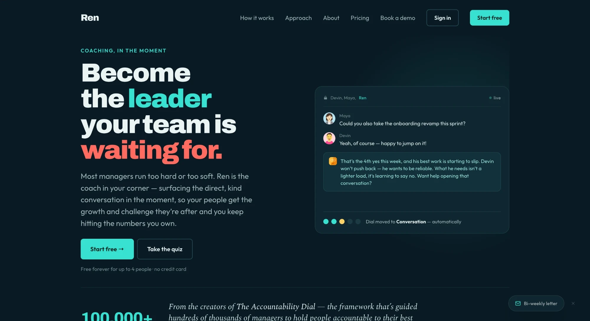
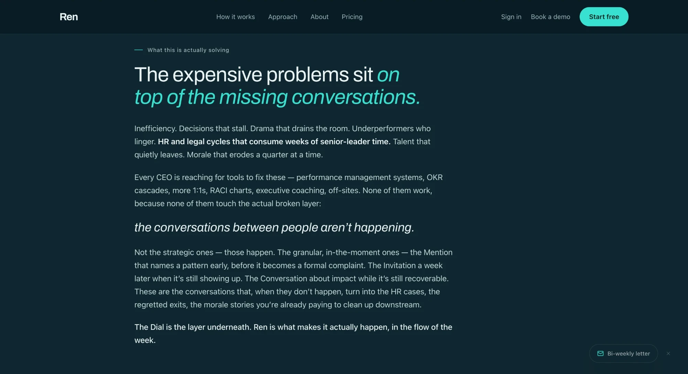
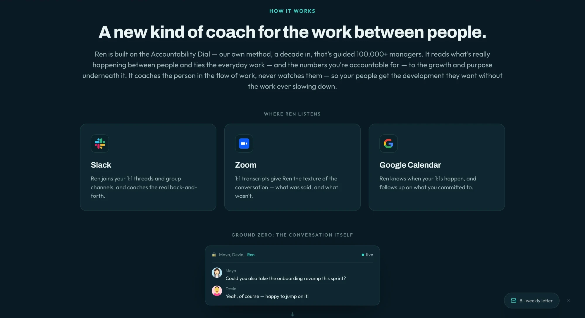
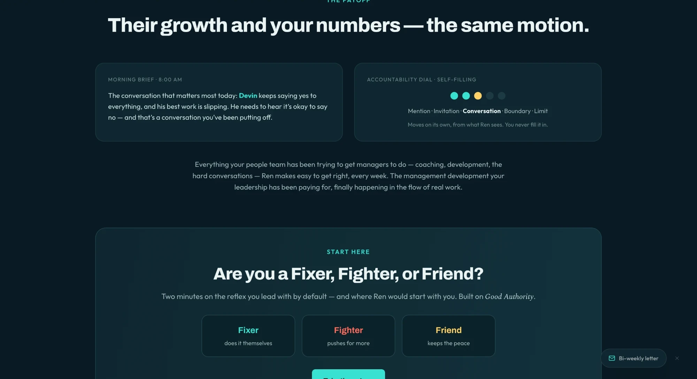
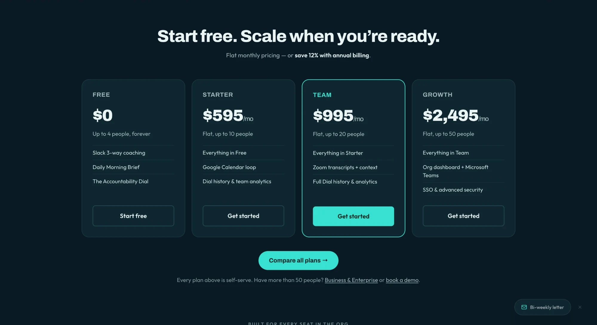
The old site read like it had been written by AI: long, heavy paragraphs and very little to see. I cut most of the text, added real product visuals, and gave the pages a natural flow, one idea at a time.
Lead with what you get
The homepage used to lead with what a manager might be missing. I rewrote it around what they get, and reordered it so the first thing you read is what Ren actually is.
Show the real product
I rebuilt the product tour to mirror the real home screen, rebuilt how-it-works around real screens, and added an interactive version of the Dial.
Pages for the enterprise buyer
New enterprise and company pages, and a get-started page for rolling Ren out to a team, with announcement templates a team lead can send. That page answers the same thing customers said about the app: “I can’t explain it to my team.”
Getting found
An SEO push with new guides and comparison pages, planned with an outside consultant, and a redesigned blog.
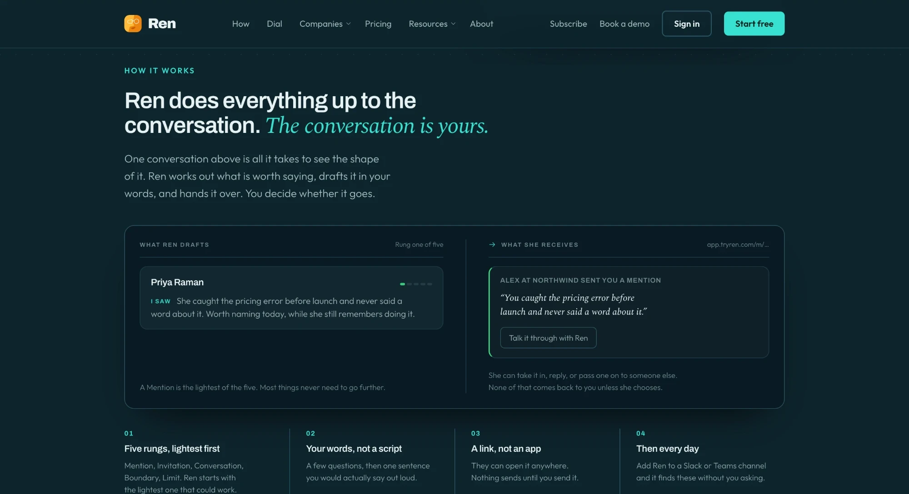
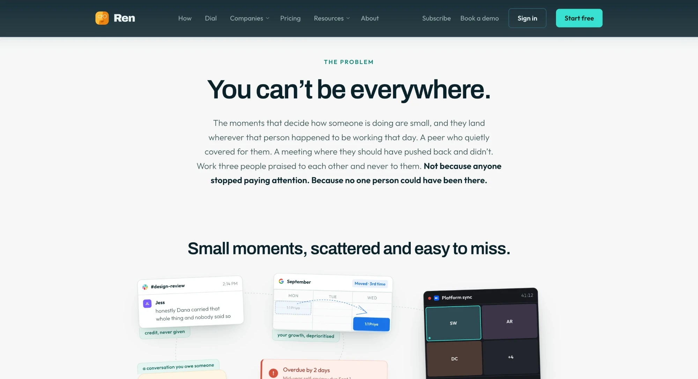
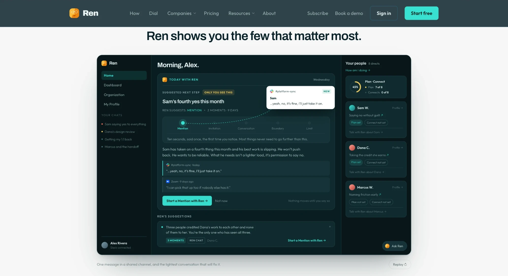
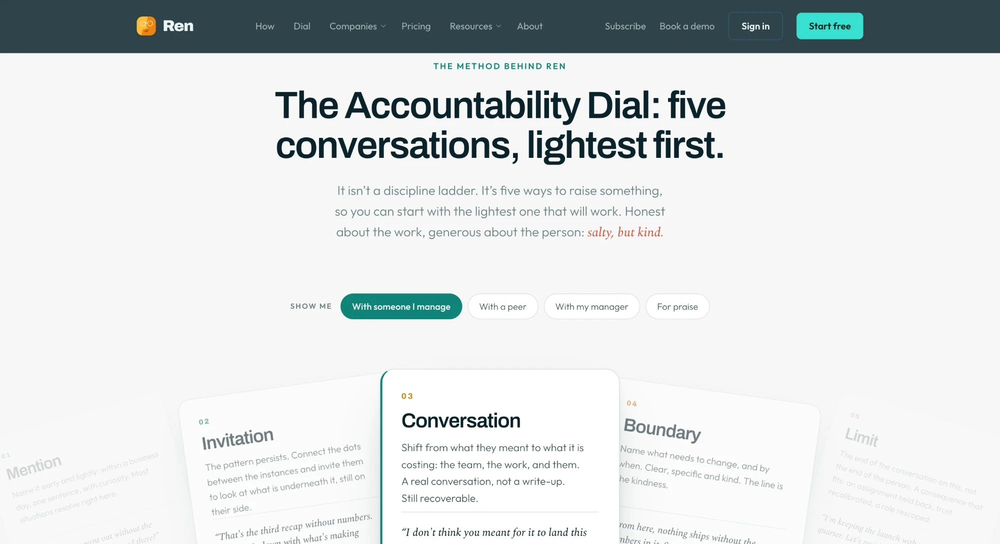
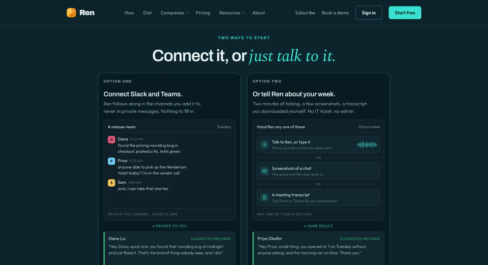
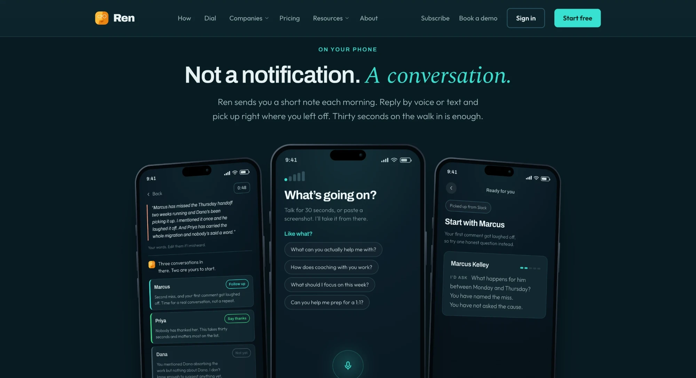
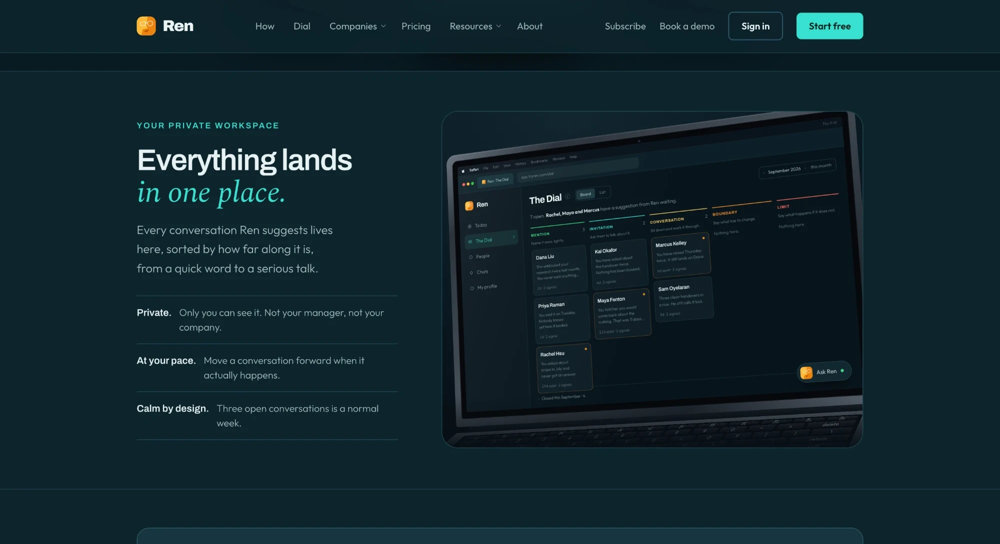
Getting it in front of people
I co-run Ren’s newsletter, which has more than 3,000 subscribers, and I made the product walkthrough videos we use so people can learn Ren without a call. I also ran a webinar push and moved a quiz from the app’s onboarding onto the website, where it could bring people in.
Trial signups surged after the relaunch
growth in free-trial signups after the relaunch
newsletter subscribers, co-run
The app redesign wasn’t live during the surge, so this is the website and go-to-market work. The redesign is what has to turn those trials into teams that stay, which is what the first day in the app is about.